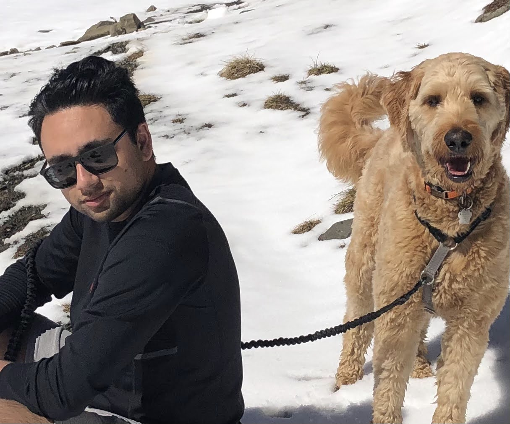

I am in my final semister of my undergratuate program at the University of Alberta studying Computer Science. I have always been interested in computers and technology since I was a child, and am looking forward to starting work as a programmer after I have completed my degree.
Professsional History
- Team Lead, Speeders Canada | July 2021 - September 2021 & May 2022 - Current
- Ensuring arcade machines are working as expected
- Keeping track of redemption prize stock and updating/ordering new inventory
- Delegating tasks and duties based on each person's strengths and skills
- Providing training to new employees, and providing any additional trainging for those who might need it
- Customer Support Specialist, Riva CRM Integration | June 2018 - January 2021
- Delivering remote installation, configuration, and administration for new Riva Cloud and Riva On-premise customers
- Providing remote troubleshooting and technical support to customers
- Documenting bugs using Redmine, and Jira
- Creating and updating Knowledge Base articles using KB publisher/html
- Assisting in testing and documentation of installing and configuring Riva Integration Server for: Microsoft Exchange, GSuite, and supported CRMs including Salesforce, NetSuite, Microsoft Dynamics CRM, and SugarCRM
- Crew Member, McDonald’s Canada | April 2015 - August 2019
Skills I offer
I have a very good understanding of Python, and have worked a fair amount with Java, C, and C++ in the past. Other languages that I have also spent time working with is Javascript, HTML, CSS, VBA, and SQL/PostgreSQL. An IDE that I have worked with to create a functional application is Android Studio where we used Tracis CI and firebase database. Some frameworks that I have spent time working on is Django/Django Rest, and React. Workflow tools that I have gotten familar with is Git/Github, VSCode, and Bash.